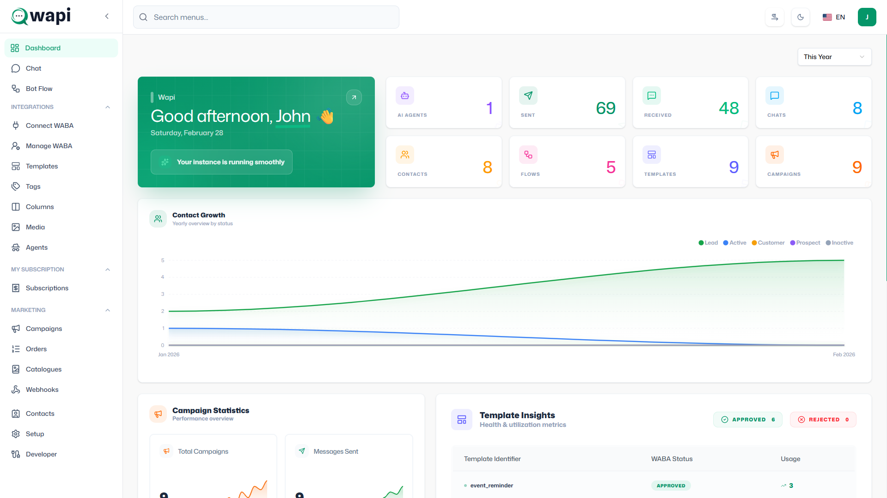

Frontend Dashboard
Frontend Dashboard
1. Overview
The Performance & Analytics Dashboard serves as the central command center for the Wapi Workspace platform. It is designed to help you easily monitor your account activity, seamlessly connect your WhatsApp Business accounts (WABA), and track important usage metrics in real-time. By providing an at-a-glance view of your platform performance, this dashboard ensures you always have complete visibility and control over your communications.

2. Header Section
The top header provides immediate context about your workspace and personal account:
- Workspace Greeting: A personalized welcome message (e.g., "Hello, John") greets you upon logging in.
- Date Display: The current day and date are displayed prominently for easy reference.
- Workspace Identity: Indicates your active workspace name (e.g., "Wapi Workspace"), ensuring you are always managing the correct account environment.
3. WhatsApp Connection
Connecting your official WhatsApp Business account is the most critical step to unlocking the platform's potential.
Link WhatsApp Card
This section enables you to connect your account using three convenient methods:
- Embedded Connection: A seamless, heavily guided setup process directly within the Wapi platform.
- QR Code Connection: A fast and easy way to link your account by simply scanning a QR code.
- Manual Connection: Allows you to connect by manually entering your business credentials and access tokens.
Actions & Alerts:
- "Connect Now" Button: Click this button to initiate the connection process using your selected method.
- "Action Required" Badge: This alert appears when your WhatsApp account is disconnected, requires re-authentication, or if there is a pending setup step needed before you can start messaging.
4. Subscription Status
Keep track of your current billing setup and access levels.
- No Active Plan: If this status appears, it indicates that you are not currently subscribed to a premium package.
- Functionality Limitations: Without an active plan, your workspace runs with limited functionality. Access to high-volume messaging and advanced automation features will be restricted.
- Upgrading: Click the "View Subscription Plans →" button to explore our premium plans and unlock the full capabilities of your workspace.
5. Quick Actions
Save time by accessing your most frequently used modules directly from the dashboard:
- Campaigns: Quickly jump into creating and sending mass broadcast messages to your contact lists.
- Tools: Easily access your tools to manage your chatbot, automated replies, and overall messaging configurations.
6. Resource Usage
Track how much of your workspace quota you are consuming. Each metric features a visual progress bar (e.g., "0% utilized") indicating your usage limits so you never run out of capacity unexpectedly.
- Flows: The total number of automated conversation workflows you have built.
- Templates: The number of customized WhatsApp message templates available for outbound broadcasts.
- Campaigns: The total count of marketing or broadcast campaigns you have created.
- Agents: The number of human team members or AI-powered agents active within your workspace.
- Webhooks: The number of external integration endpoints pulling or pushing real-time data to Wapi.
7. Real-time Metrics
Monitor your messaging and customer engagement statistics as they happen:
- Sent: Total number of outgoing messages dispatched to your customers.
- Received: Total number of incoming messages you have received from your audience.
- Contacts: The total size of your customer database stored within the workspace.
- Chats: The current number of ongoing and historical conversation threads.
- Tags: The number of custom labels you've created to organize and group your contacts or chats.
8. Sidebar Navigation
The left-hand sidebar acts as your permanent menu for navigating the entire Wapi platform:
- Dashboard: Return back to this Performance & Analytics screen.
- WA Chat: Open your centralized team inbox to read and reply to messages.
- Chat Theme: Customize the colors and display of your chat inbox.
- Connect WABA: An alternative route to manage your WhatsApp business connection.
- WABA Phone Numbers: Manage the individual phone numbers linked to your account.
- Templates: Create, edit, and submit new message templates for Meta's approval.
- Tools: Access various utilities to enhance your messaging strategy.
- Tags: Create and manage descriptive labels for your contacts.
- Media: Upload and manage images, videos, and documents used in conversations.
- Teams: Invite team members and configure their access permissions.
- Agents: Manage the setup of human support staff and AI chat agents.
- Flow Builder: Design visually customized, logic-based automation paths.
- Default Action: Establish fallback responses for when your chatbot doesn't understand a message.
- Reply Materials: Build a centralized knowledge base of standard responses.
- Keyword Action: Trigger specific messages or automations based on incoming customer keywords.
- AI Call Agent: Configure voice-based AI capabilities for your workspace.
- Form Builder: Construct simple forms to collect structured data from your users.
9. Use Cases
The Performance & Analytics Dashboard is especially useful for:
- Monitoring Campaign Performance: Watch real-time fluctuations in your "Sent" messages and "Chats" to gauge how well your recent broadcast is performing.
- Tracking WhatsApp Engagement: Understand overall customer activity and how frequently your audience interacts with your brand.
- Managing Automation Capacity: Keeping an eye on "Flows" and "Webhooks" usage to ensure your automated systems have room to scale smoothly without hitting plan limitations.
10. Best Practices
To get off to a running start with Wapi Workspace:
- Connect your WABA first: You cannot send campaigns or utilize chat features until your WhatsApp Business Account is fully linked. Always keep an eye out for the "Action Required" badge to maintain a healthy connection.
- Set up templates before launching campaigns: All bulk promotional messages require Meta-approved templates. Draft and submit these early so they are ready when you want to launch.
- Monitor usage regularly: Regularly check your Resource Usage metrics to ensure you aren't close to hitting your plan's limits, thereby preventing any interruptions in your marketing efforts.